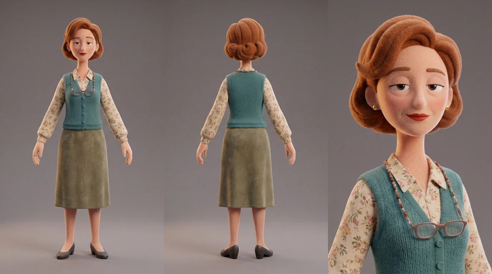
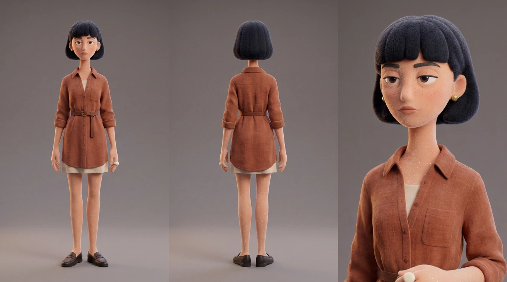
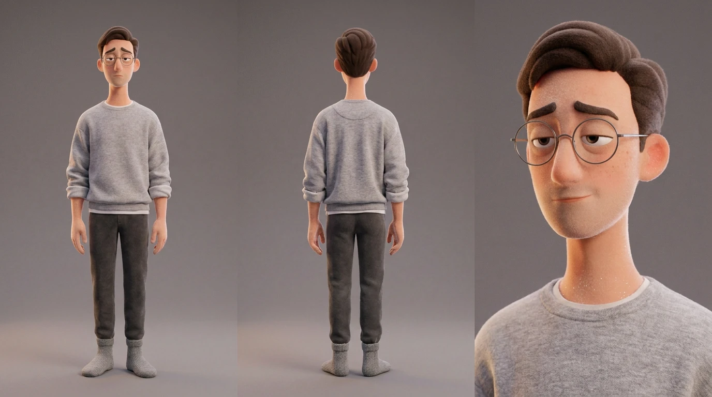
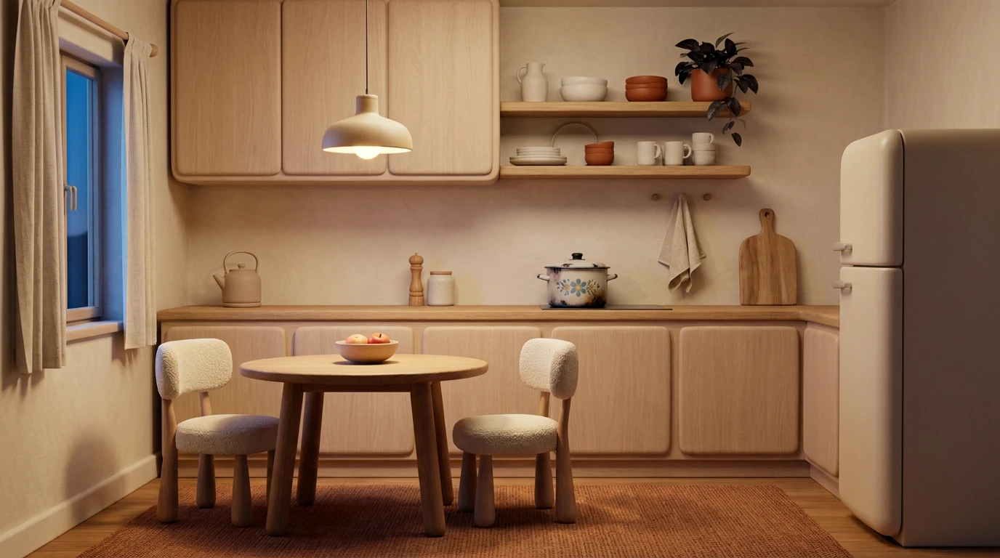
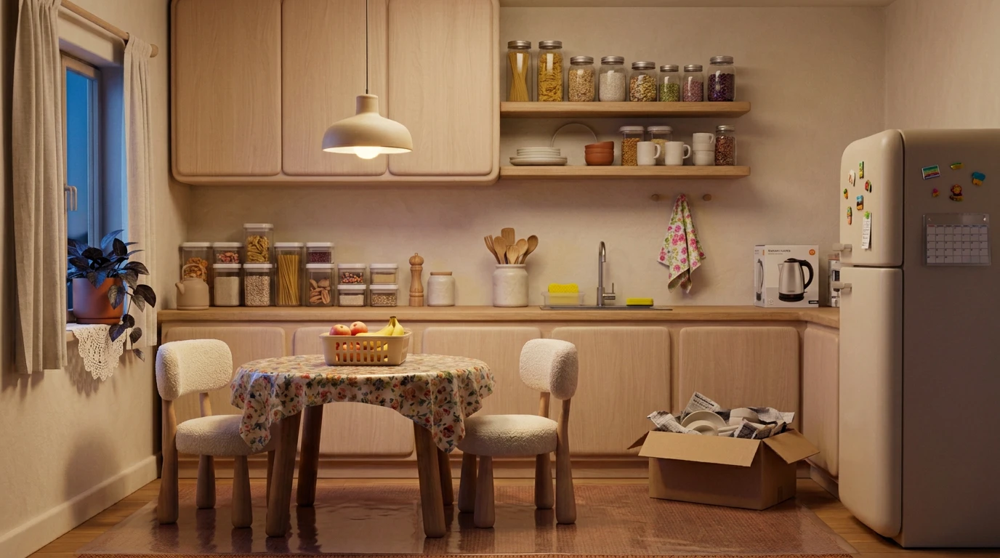
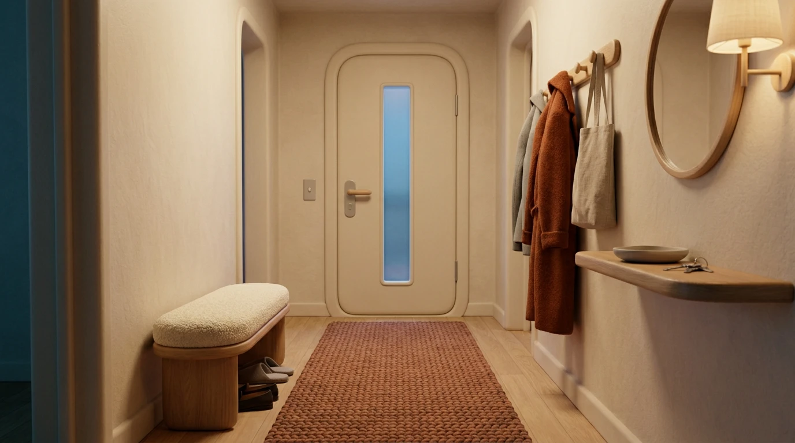
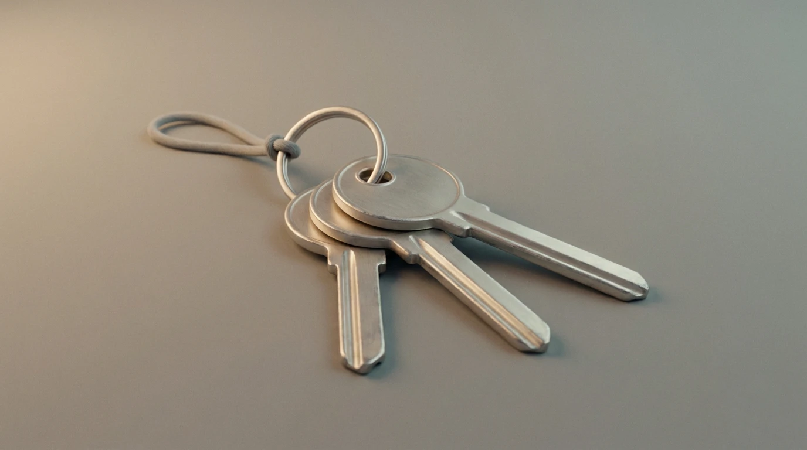
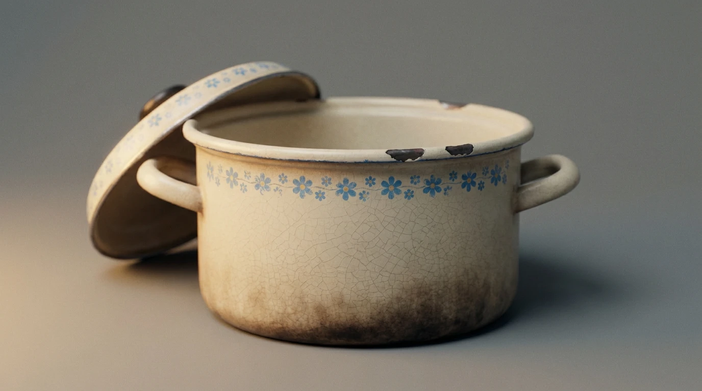
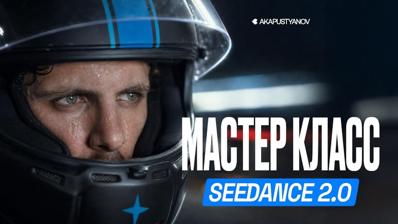

Один короткометражный мультфильм на минуту, разобранный до последнего промпта: три героя, четыре локации, восемь сцен, десять реплик. Ничего не спрятано — бери и собирай свой на той же схеме.
Всё делается в одном сервисе — Utopy: картинки в Nano Banana Pro, видео в Seedance 2.5. Монтаж — в чём удобно.
Свекровь приходит без звонка, пока хозяев нет дома. Прибирается, переставляет, выбрасывает старую кастрюлю. Она не злодейка — она искренне помогает, и именно поэтому возразить нечего.
Семь у свекрови, одна у мужа, две у жены — и первая из них не договорена. Соотношение держит историю: один говорит, другая молчит.
В генерациях текста нет нигде — кириллицу ни одна модель не наберёт. Всё накладывается в монтаже.
ТИТР (0:03, поверх первого кадра) Я ЖЕ НЕ ЧУЖАЯ у неё есть ключи от вашей квартиры Заголовок — Bickham Script Pro 3 Подпись — Open Sans ФИНАЛЬНЫЙ ТИТР (2 секунды на чёрном) А кто им эти ключи дал?
В Utopy → Nano Banana Pro, кадр 3:4, качество 2k. Сначала одиночная картинка, потом по ней карта из трёх панелей — без карты лицо поплывёт между сценами.

Свекровь, 60карта, 3 панелиСкачать
Жена, 32карта, 3 панелиСкачать
Муж, 35карта, 3 панелиСкачатьA stylized 3D feature-animation character in the style of a high-end designer art toy, full-body front view on a flat mid-grey studio backdrop. A woman of about sixty, standing squarely with her weight settled on both feet, chin slightly lifted, shoulders back, one hand resting on her hip and the other holding up a small bunch of keys on a plain ring, letting them hang from two fingers. She looks straight ahead with a pleasant, bright, entirely certain expression and a small warm smile — a woman who is sure she is welcome and sure she is helping. She is not sour, not stern and not tired. Face and body design: a tall elongated figure about eight heads tall with a small head on a long neck, squared shoulders held deliberately back, long limbs and long capable hands. Narrow almond eyes set wide apart with heavy upper lids and small pupils, alert and quick, with fine lines fanning from the corners. Thin brows, neatly drawn and arched a little higher than they naturally sit. A long thin nose. A small mouth with clearly defined lipstick in a muted brick red. High cheekbones, a firm jaw and a softly rounded chin. Soft creases from the nose to the corners of the mouth, and a few age marks on the backs of the hands. Her hair is a warm coppery chestnut, dyed and well kept with no grey at all, cut short and set in a neat rounded style with soft volume at the crown and curled under at the ends, clearly done at a salon and maintained. It is one clean sculpted silhouette of soft matte felted plush with a fine velvety nap and only a gentle sheen, holding a crisp shape. Her skin is soft flocked velvet: a matte painted-vinyl base covered in a fine dense peach-fuzz nap that glows softly along every edge of her silhouette, with a subtle dusting of iridescent glitter in the pile that sparkles on her cheekbones, knuckles and shoulders. Blush on the cheeks, nose and ears. She wears a crisp cream blouse with a small muted floral print, buttoned to the collar, under a neat teal knitted waistcoat with flat buttons. A straight brushed-wool skirt in muted olive falling just below the knee. Dark low-heeled shoes with a rounded toe. A pair of reading glasses with thin frames hangs on a fine beaded chain around her neck, resting on her chest. Three rings on her fingers including a wide gold wedding band, and small gold earrings. A soft structured handbag hangs from the crook of her hip-resting arm. THE KEYS: a small bunch of three or four plain keys on a simple metal ring, the only hard object in the frame, with a soft brushed finish and no shine. Everything else in the frame is soft and touchable: velvet nap, felted plush, chunky knit, brushed wool and soft cotton, with rounded soft forms and no hard shiny surfaces except the keys, the small rings and the thin glasses frames. Soft cinematic lighting: one warm key light at 3500K from the left, gentle falloff, a delicate sparkling rim light along her silhouette, shallow macro depth of field, fine natural film grain and gentle bloom. Palette of 60% cream and muted olive, 30% teal, 10% coppery chestnut and warm gold. Premium stylized 3D render, tactile handmade plush and knit micro-texture, clean empty background. The neat coppery set hair, the reading glasses hanging on their chain and the clearly defined brick-red lipstick are the three defining features of this character and must be clearly visible. Exactly two arms, two legs and ten fingers. No text, no letters, no logos and no numbers anywhere.
A stylized 3D feature-animation character in the style of a high-end designer art toy, full-body front view on a flat mid-grey studio backdrop. A woman of about thirty-two, standing squarely with her weight settled on both feet, two cloth shopping bags held in one hand and a set of keys still in the other as if she has just come through her own front door, looking straight ahead with a calm, alert, self-possessed expression. Face and body design: a tall elongated figure about eight heads tall with a small head on a very long slender neck, narrow straight shoulders held level, long thin limbs and long fine fingers. Narrow almond eyes set wide apart with heavy upper lids and small pupils, steady and direct; thin brows set low and almost straight, giving her a clear, unsentimental look; a long thin nose; a small precise mouth held closed; sharp cheekbones and a pointed chin. Her skin is soft flocked velvet: a matte painted-vinyl base covered in a fine dense peach-fuzz nap that glows softly along every edge of her silhouette, with a subtle dusting of iridescent glitter in the pile that sparkles on her cheekbones, collarbones, shoulders and hands. A light scatter of freckles across the nose and cheeks, blush on the nose and ears. Her hair is near-black, cut in a blunt chin-length bob with a straight heavy fringe just above the brows, precise and clearly deliberate — made of soft matte felted plush with a fine velvety nap and no sheen, holding a crisp sculpted shape with a clean sharp edge along the bottom. She wears a rust-coloured linen shirt-dress with a soft matte weave, buttoned most of the way up, the sleeves rolled to the elbow and the waist loosely belted with the same fabric, falling to mid-calf. Underneath, plain cream cotton. Flat dark leather loafers. One large matte ceramic ring in off-white on her right hand, small gold stud earrings, and a thin gold wedding ring. Everything she wears has been chosen on purpose and nothing is accidental. THE BAGS AND KEYS: two plain cloth shopping bags, heavy and softly creased, in one hand; a small bunch of keys on a plain ring in the other, held loosely — the only hard objects in the frame, with a soft brushed finish and no shine. Everything else is soft and touchable: velvet nap, felted plush, soft linen and brushed cotton, with rounded soft forms and no hard shiny surfaces except the keys, the small studs and the thin wedding ring. Soft cinematic lighting: one warm key light at 3500K from the left, gentle falloff, a delicate sparkling rim light along her silhouette, shallow macro depth of field, fine natural film grain and gentle bloom. Palette of 60% rust and cream, 30% near-black, 10% off-white ceramic and warm gold. Premium stylized 3D render, tactile handmade plush and knit micro-texture, clean empty background. The blunt near-black bob with its heavy straight fringe and the large off-white matte ceramic ring are the two defining features of this character and must be clearly visible. Exactly two arms, two legs and ten fingers. No text, no letters, no logos and no numbers anywhere.
A stylized 3D feature-animation character in the style of a high-end designer art toy, full-body front view on a flat mid-grey studio backdrop. A man of about thirty-five, standing with his weight on one leg and both hands pushed into his pockets, his shoulders slightly raised and his body angled a few degrees away from camera, looking off to one side rather than at the viewer, with a mild, pleasant, uncommitted expression — a man who would rather not be asked anything. Face and body design: a tall elongated figure about eight heads tall with a small head on a long neck, soft sloping shoulders held a little too high, a slight stoop, long limbs and long soft hands. Narrow almond eyes set wide apart with heavy upper lids and small pupils, gentle and a little evasive; soft brows set high and slightly raised in the middle, giving him a permanently mildly apologetic look; a straight nose with a rounded tip; a small soft mouth with a faint upward curve that is not quite a smile; a soft jaw and a rounded chin. Clean-shaven, with smooth boyish cheeks that make him read a few years younger than he is. His skin is soft flocked velvet: a matte painted-vinyl base covered in a fine dense peach-fuzz nap that glows softly along every edge of his silhouette, with a subtle dusting of iridescent glitter in the pile that sparkles on his cheekbones, knuckles and shoulders. A light scatter of freckles across the nose, warm blush on the nose and ears. His dark brown hair is one clean sculpted silhouette, neatly cut and combed flat to one side with a tidy parting — the haircut of someone whose mother still comments on it — made of soft matte felted plush with a fine velvety nap and only a gentle sheen. He wears thin round wire-framed glasses. He wears a soft heather-grey marl sweatshirt, slightly too large, with the cuffs pushed up to the forearms, over a plain white cotton tee just visible at the collar. Soft charcoal brushed-cotton home trousers with a gentle drape, and thick grey knitted house socks. A thin gold wedding ring. Everything in the frame is soft and touchable: velvet nap, felted plush, soft marl jersey and brushed cotton, with rounded soft forms and no hard shiny surfaces except the thin glasses frames. Soft cinematic lighting: one warm key light at 3500K from the left, gentle falloff, a delicate sparkling rim light along his silhouette, shallow macro depth of field, fine natural film grain and gentle bloom. Palette of 60% heather grey, 30% charcoal, 10% cream and warm gold. Premium stylized 3D render, tactile handmade plush and knit micro-texture, clean empty background. The thin round wire-framed glasses and the softly raised inner brows that give him a permanently mildly apologetic look are the two defining features of this character and must be clearly visible. Exactly two arms, two legs and ten fingers. No text, no letters, no logos and no numbers anywhere.
Nano Banana Pro, 16:9, 2k. Референс @image1 — готовая одиночная картинка персонажа. @image1 — THE CHARACTER. 100% matches this reference for identity, face, hair, wardrobe and proportions. Nothing is redrawn or reinterpreted. Take ONLY the character from the reference — not its background, not its framing and not its pose. A character model sheet: three panels on one flat mid-grey studio backdrop, even soft studio lighting, the same character in all three panels with identical design, identical wardrobe and identical scale, standing on the same ground line. LEFT PANEL: full-body front view, standing straight in a neutral relaxed pose, arms slightly away from the body, hands open and empty, looking directly forward with a neutral calm expression. CENTRE PANEL: full-body back view, the same neutral pose, showing [что видно сзади: причёска, спина одежды, драпировка]. RIGHT PANEL: a close-up head-and-shoulders portrait, three-quarter angle, neutral calm expression, showing [два-три якоря узнаваемости] in full detail. Stylized 3D feature-animation art-toy render: soft flocked velvet skin with a fine peach-fuzz nap and a subtle iridescent glitter dusting, felted plush hair holding a crisp sculpted shape, chunky knit and brushed fabric, rounded soft forms, no hard shiny surfaces. Proportions identical in every panel: about eight heads tall, small head, long neck, long limbs and long fingers. Even soft studio lighting with a delicate sparkling rim, fine natural film grain, shallow depth of field. Clean empty mid-grey background. Exactly two arms, two legs and ten fingers. No text, no letters, no logos and no numbers anywhere.
Кадр 9:16 для комнат, 3:4 для предметов. Первой генеришь кухню — она становится эталоном квартиры. Вторую версию кухни делай правкой первой, иначе зритель не узнает, что это та же комната, и весь фильм рассыплется.

Кухня · её версияэталон квартирыСкачать
Кухня · послеправка первойСкачать
Прихожаязамок и крючкиСкачать
Ключипропс для макроСкачать
Кастрюляпропс для макроСкачатьNano Banana Pro, 9:16, 2k. Референс @image1 — карта героини (для материалов и палитры). @image1 — THE RENDER: materials, finish, level of stylization and palette language match this reference exactly. Take ONLY the render style from it, never the character. No people appear anywhere in this image. An empty small kitchen in the evening, in a stylized 3D feature-animation world where every surface is soft and touchable: velvet nap, chunky knit, soft linen, brushed cotton and matte ceramic, with rounded soft forms and no sharp edges. This kitchen belongs to someone with deliberate taste and it shows: it is calm, spare and carefully chosen, with nothing accidental in it. Pale plaster walls in warm cream. Along the back wall, handleless cabinets in soft pale oak with rounded edges, and a long uncluttered oak counter holding only three things: a plain matte kettle, a wooden pepper mill and a single pale ceramic jar. Above them, two open oak shelves with a small deliberate collection of handmade matte ceramics in off-white and rust, spaced apart with air between them, and one dark leafy plant in a rust-coloured pot. A plain natural linen towel hangs on a wooden peg. A large wooden chopping board leans against the wall at the end of the counter. In the centre, a round oak table with a bare top and two softly rounded chairs with cream bouclé seats. On the table, nothing but a shallow ceramic bowl with two apples in it. On the left, a window with plain unbleached linen curtains, a deep sill and blue evening outside. A cream fridge with rounded corners stands at the right, its front completely bare and clean with nothing attached to it. ON THE COUNTER, CLEARLY VISIBLE AND IMPORTANT: one old enamel cooking pot from another era, cream with a faded pattern of small blue flowers around its rim, the enamel chipped in two places along the edge and the base darkened from decades of use. It does not match anything else in the kitchen and it is obviously kept on purpose. A woven rug in muted rust on the warm oak floor. Evening light: a single pendant lamp with a soft paper shade above the table as a warm 2800K key making a calm pool of light, a faint cool blue dusk from the window on the left, the corners of the room in gentle shadow. Soft cinematic lighting, shallow depth of field, fine natural film grain and gentle bloom. Palette of 60% warm cream and pale oak, 30% rust, 10% near-black and muted blue dusk. Vertical composition, eye-level view facing the counter and the table with the window on the left and the fridge on the right, rule of thirds, no people and no animals in frame. Premium stylized 3D render, tactile handmade plush and ceramic micro-texture. No text, no letters, no numbers and no legible labels anywhere.
Nano Banana Pro, 9:16, 2k. Референс @image1 — кухня, её версия. @image1 — THE SAME KITCHEN. CHANGE: the room has been tidied and reorganised by someone else, with good intentions and completely different taste. Everything has been made practical. Specifically: a patterned plastic oilcloth in a busy floral print now covers the bare oak table, and the ceramic bowl of apples has been replaced by a plastic fruit basket pushed to one side. The counter, previously almost empty, is now lined with plastic storage containers, a jar of utensils, a sponge in a plastic dish and a second kettle box. On the open shelves the spaced-out handmade ceramics are gone and in their place stand glass jars of grains and pasta, lined up tightly by height with no air between them. A flowery synthetic towel hangs folded over the tap. The dark leafy plant has been moved from the counter to the windowsill and set on a crocheted lace doily. The bare fridge front is now covered with small magnets and a plastic calendar holder. A plastic mat has been laid over the woven rust rug. The wooden chopping board is gone from the end of the counter. On the floor beside the counter stands a cardboard box with the handmade ceramics packed into it, newspaper between them, ready to be taken away. THE OLD ENAMEL POT IS GONE from the counter, and nothing stands where it was. PRESERVE EXACTLY: the camera position, the framing, the lens and the angle, which are identical to the reference; the architecture, the pale plaster walls, the oak cabinets, the counter, the window and its linen curtains, the round table and the two chairs, the fridge, the floor; and the lighting — the same pendant lamp as a warm 2800K key over the table, the same cool blue dusk from the window, the same shadows in the same corners. Nothing about the room itself and nothing about the light has changed. Only the objects in it have. Same stylized 3D feature-animation render, same materials and finish, same film grain and bloom, no people and no animals in frame. No text, no letters, no numbers and no legible labels anywhere, including on the jars, the calendar and the magnets.
Nano Banana Pro, 9:16, 2k. Референсы @image1 — карта жены, @image2 — кухня, её версия. @image1 — THE RENDER and @image2 — THE WORLD: the same apartment, the same palette and the same material language as this kitchen. Take ONLY the style and the world from these references, never the characters and never the furniture layout. No people appear anywhere in this image. An empty narrow entrance hallway in the evening, in the same stylized 3D feature-animation world where every surface is soft and touchable: velvet nap, chunky knit, soft linen, brushed cotton and matte ceramic, with rounded soft forms and no sharp edges. At the far end, a rounded front door in soft cream with a pale oak handle and a plain brushed-metal lock plate at waist height, clearly visible, and a security chain hanging slack in its bracket. On the right wall, a row of wooden pegs with a long rust wool coat, a soft grey jacket and a linen tote hanging on them, and below, a narrow oak console shelf holding a single shallow matte ceramic dish with one set of keys lying in it. Above the shelf, a plain round mirror in a thin pale oak frame. On the left, a low oak bench with a cream bouclé cushion, flat dark loafers tucked beneath it and a pair of men's house shoes beside them. A long woven runner in muted rust on the warm oak floor. Everything is spare and deliberately chosen, like the kitchen: few objects, each one meant. Evening light: a small wall lamp with a soft paper shade near the mirror as a warm 2800K key, soft shadows down the hallway, a faint cool blue light through a narrow glass pane in the front door. Soft cinematic lighting, shallow depth of field, fine natural film grain and gentle bloom. Palette of 60% warm cream and pale oak, 30% rust, 10% near-black and muted blue. Vertical composition, eye-level view down the hallway toward the door, rule of thirds, no people and no animals in frame. Premium stylized 3D render, tactile handmade plush and ceramic micro-texture. No text, no letters, no numbers and no legible labels anywhere.
КЛЮЧИ — Nano Banana Pro, 3:4, 2k. Референс @image1 — кухня (для материалов). A close-up product still of a small bunch of keys on a flat mid-grey studio backdrop, in the same stylized 3D feature-animation world where every surface is soft and touchable, with rounded soft forms and no sharp edges. Three plain door keys of slightly different lengths on a simple round metal ring, laid out with the ring resting flat and the keys fanned apart. The metal has a soft brushed finish with no shine and no reflections, slightly worn and dulled along the edges from use. A short loop of plain grey cord is threaded through the ring. Nothing else in the frame. @image1 — THE RENDER: materials, finish and level of stylization match this reference exactly. Soft cinematic lighting: one warm key light at 3500K from the left, gentle falloff, a soft rim along the metal, shallow macro depth of field, fine natural film grain and gentle bloom. Palette of warm grey, soft silver and cream. Premium stylized 3D render, tactile micro-texture, clean empty background. No text, no letters, no numbers and no engraved markings anywhere on the keys. ============================================================================== КАСТРЮЛЯ — Nano Banana Pro, 3:4, 2k. Референс @image1 — кухня, её версия. A close-up product still of an old enamel cooking pot on a flat mid-grey studio backdrop, in the same stylized 3D feature-animation world where every surface is soft and touchable, with rounded soft forms and no sharp edges. A round two-handled enamel pot from another era, cream with a faded hand-painted band of small blue flowers running around its rim, its matching lid resting slightly askew on top. The enamel is chipped through to dark metal in two places along the edge, there is a fine web of surface crazing across the body, and the base is darkened and discoloured from decades of use on a stove. It is worn, imperfect and clearly loved — an object somebody kept on purpose. @image1 — THE RENDER: materials, finish and level of stylization match this reference exactly. The pot has a soft matte enamel surface with no gloss and no highlights. Soft cinematic lighting: one warm key light at 3500K from the left, gentle falloff, a soft rim along the rim and handles, shallow macro depth of field, fine natural film grain and gentle bloom. Palette of cream, faded cornflower blue and warm grey. Premium stylized 3D render, tactile ceramic and enamel micro-texture, clean empty background. No text, no letters and no numbers anywhere.
В Utopy → Seedance 2.5, вертикаль 9:16, 24 fps. Главное правило: в каждом блоке свой операторский приём, и ни один не повторяется. Количество склеек убывает к финалу — монтаж замирает вместе с героиней.
Референсы: @image1 — карта свекрови, @image2 — карта жены, @image3 — прихожая, @image4 — кухня после перестановки, @image5 — кастрюля. SCENE CONTEXT ANIMATION RULE FIRST: characters animated ON TWOS (stepped 12 fps, held frames on strong poses), secondary action throughout, all twelve principles of animation with feature-film polish. ACTING RULE — UNDERPLAY: NO mugging, no cartoon-wide eyes, no flailing, NO TEARS. A blank, vacant or dead face is the worst possible failure: the older woman is genuinely delighted to be caught here, warm, busy and completely certain she is welcome — there is not one trace of malice, slyness or guilt in her; the younger woman is not angry yet, she is registering, and her face shows a person recalculating in silence. COMPOSITION LAW — THE FRAME TELLS THE STORY: never a centred subject. The camera stands in the dark hallway. The kitchen doorway is a bright warm rectangle set in the RIGHT third of the frame, deep in the shot, with the older woman working inside it; everything around that rectangle is dark hallway. The younger woman stands in the near darkness on the LEFT, outside the light, holding her shopping bags. One of them is lit and moving, the other is dark and still. VOICE RULE: exactly one voice moment, in RUSSIAN, spoken by the older woman — bright, pleased, entirely unembarrassed, the tone of someone announcing good news, never cruel and never sly. The younger woman does not speak at any point in this scene, and her silence is the subject. TEXT RULE: NO text, letters, numbers, symbols or UI anywhere in frame; no legible labels on the jars. CAMERA RULE: all four frames are locked with a breathing operator, no camera movement of any kind. THE DEVICE — A FRAME WITHIN A FRAME: the kitchen is seen as a lit rectangle inside a dark one, and the same framing is used twice, at the start and at the end of the scene, with the woman inside it doing different things. CUT STRUCTURE — 3 hard cuts, 4 shots, 8.0 s. Real time throughout, no slow motion. ACTIVE REFERENCES @image1 — THE MOTHER-IN-LAW, about sixty. 100% matches the reference for identity, design, the coppery set hair, the reading glasses on their chain and the wardrobe; take ONLY her design from it, never its background, framing or lighting. Over her clothes she now wears a plain cotton apron, slightly damp at the front. Acting: she stands at the sink with her back to the doorway, scrubbing something, her shoulders working; at the sound of the front door she turns, sees the younger woman and her whole face lights up with real pleasure; she delivers her line with both wet hands held up and open in front of her; then she turns straight back to the sink and carries on, already talking about something else. She is not caught out, because it does not occur to her that she could be. @image2 — THE WIFE, about thirty-two. 100% matches the reference for identity, design, the blunt near-black bob and the rust linen shirt-dress, never redrawn. Acting: she comes in through the front door with two heavy cloth bags in one hand and her own keys still in the other, pushes the door shut behind her with her shoulder, and stops dead two steps inside. She does not put the bags down. She does not answer. Her eyes move once across the lit doorway and come back. Her jaw sets, very slightly. @image3 — THE HALLWAY: the location and its materials, palette and light in the evening. @image4 — THE KITCHEN AFTER THE REARRANGING: the location as seen through the doorway. @image5 — THE OLD ENAMEL POT: 100% matches the reference. It stands in the depth of the kitchen on top of a cardboard box on the floor beside the bin, small and unremarked, part of a pile of things set aside to be taken away. It is never mentioned and never looked at in this scene. Render style, materials and finish match the references exactly: stylized 3D animated feature look, soft flocked velvet skin, felted plush hair, chunky knit, soft linen and matte ceramic, rounded soft forms, fine film grain and gentle bloom. Nothing photoreal, nothing glossy. LOCATION MAP The narrow hallway in the evening, the camera standing in it a little way in from the front door, which is behind and to the left of frame. Down the hallway and to the right, the open kitchen doorway glows warm, and through it the sink, the counter, the open shelves and the fridge are visible in depth. On the floor of the kitchen beside the bin, a cardboard box with the old enamel pot standing on top of it. FIRST FRAME The dark hallway. In the right third and deep in the shot, the kitchen doorway stands open as a bright warm rectangle, and inside it an older woman in an apron works at the sink with her back turned, her coppery set hair catching the light. Everything around the rectangle is shadow. A set of keys lies on the counter beside her, inside the light. FORMAT MODE Vertical 9:16 throughout. OPTICS Framing A: 29 degrees FOV from the hallway, T2.8, focus on the kitchen inside the doorway so the lit rectangle is sharp and the dark hallway around it falls soft. Shot B: 29 degrees FOV, T1.8, focus on the wife's face in the near darkness. Shot C: 63 degrees FOV, T2.0, focus through the doorway on the open shelves. Framing A is identical both times it is used. CAMERA Four locked shots using three camera positions, breathing operator with real weight, no movement in any of them. Framings A and D are the same single position. ACTION SEQUENCE 0.0–0.6 s — the dark hallway and the lit kitchen doorway. The older woman scrubs at the sink with her back turned. Behind camera, a key turns in the front door and the door clicks shut. 0.6–3.2 s — she turns from the sink, sees, and her whole face lights up. Holding both wet hands open in front of her, she says brightly in Russian: "О! А я мимо проходила. Дай, думаю, зайду." Behind her on the counter, her own set of keys is lying in the light. HARD CUT. 3.2–5.0 s — a close-up of the wife standing in the near-dark hallway, two heavy bags pulling one shoulder down, her own keys still in her other hand. She has not moved and has not put anything down. Her eyes travel once across the lit doorway and come back. Her jaw sets, very slightly. She says nothing. HARD CUT. 5.0–6.4 s — a tighter view through the doorway from where she stands: the open shelves, where rows of glass jars now stand lined up tightly by height. Nothing of hers is on them. HARD CUT. 6.4–8.0 s — framing A again, identical: the older woman has already turned back to the sink and is scrubbing again, her shoulders working, talking on happily off-mic with no words audible. Deep behind her on the kitchen floor beside the bin, a cardboard box with an old enamel pot standing on top of it. Nothing in the hallway moves. ANIMATION STYLE Stepped animation on twos with held poses, feature-film polish, busy overlapping motion in the older woman's hands and shoulders, absolute stillness in the wife. PHYSICS Real weight: the heavy bags pull the wife's shoulder down and swing once when she stops, the front door closes against her shoulder with mass, water runs and splashes in the sink with real surface tension, the apron is damp and clings in two places. LIGHTING The kitchen pendant lamp as a warm 2800K key filling the doorway and spilling only a short way into the hallway; the hallway's own small wall lamp off to the right as a dim warm 2700K edge; a faint cool blue light through the glass pane of the front door behind camera. The contrast is strong: the rectangle of the kitchen is bright and warm, the hallway around it is dark, and the wife stands outside the light for the whole scene. AUDIO NO BACKGROUND MUSIC, NO SCORE, NO MUSICAL STING. Diegetic only: a key turning in a lock and a front door clicking shut, two heavy bags creaking, running water and the scrub of a brush on a pan, a jar set down on a shelf, a fridge hum, and the older woman's cheerful indistinct talking continuing under everything after her line. The wife makes no sound at all. One line in Russian. QUALITY Feature-animation quality, tactile plush, knit and ceramic micro-texture, fine natural film grain, gentle bloom in the lit doorway, no banding, no smearing. TECHNICAL PARAMETERS Vertical 9:16, 24 fps, real time, 8.0 seconds total, 4 shots, 3 hard cuts, three camera positions with the first used twice. POSITIVE LOCKS Shots 1 and 4 use exactly the same camera position, height, lens and framing. The wife stays in the dark hallway for the whole scene, never enters the kitchen, never puts down the bags and never speaks. The older woman's face is warm and delighted throughout, with no slyness, no guilt and no disapproval in it. Her own keys are visible on the kitchen counter in the lit doorway. The old enamel pot stands on the cardboard box beside the bin in the depth of the kitchen and is never mentioned or looked at. Exactly two characters in the whole scene and nobody else. Exactly two arms and ten fingers on each. No text, letters or numbers anywhere, including on the jars. No music of any kind.
Референсы: @image1 — карта свекрови, @image2 — кухня после перестановки. SCENE CONTEXT ANIMATION RULE FIRST: characters animated ON TWOS (stepped 12 fps, held frames on strong poses), secondary action throughout, all twelve principles of animation with feature-film polish. ACTING RULE — UNDERPLAY: NO mugging, no wide eyes, no flourish, NO TEARS. A blank, vacant or dead performance is the worst possible failure: she is deep in a task she is good at, working without hurry and without looking up, entirely absorbed and entirely content. There is no malice, no slyness and no performance in her at all — she is cooking for people she loves, in a kitchen she considers hers to use. THE RULE THAT GOVERNS THIS SCENE: the food must look genuinely delicious and the cooking must look like real care. The discomfort comes from how good it is, not from anything being wrong with it. COMPOSITION LAW — THE FRAME TELLS THE STORY: the scene starts inside the steam and pulls out to the whole stove. In the second shot she stands at the stove with her back to camera, occupying the LEFT, and the three occupied burners run away to the RIGHT — the entire cooking surface is in use and there is nowhere left to put anything. VOICE RULE: exactly one voice moment, in RUSSIAN, spoken by her without turning round and without stopping what her hands are doing — warm, cheerful, matter-of-fact, the tone of someone reporting a good deed, never cruel and never sly. Nobody else speaks. TEXT RULE: NO text, letters, numbers, symbols or UI anywhere in frame; no legible labels on the jars or packets. CAMERA RULE: both frames are locked with a breathing operator, no camera movement of any kind. THE DEVICE — THE WARMEST FRAME IN THE FILM: tight, steamy and appetising, lit like food photography, and completely at odds with everything around it. CUT STRUCTURE — 1 hard cut, 2 shots, 5.6 s. Real time throughout, no slow motion. ACTIVE REFERENCES @image1 — THE MOTHER-IN-LAW. 100% matches the reference for identity, design, the coppery set hair, the reading glasses on their chain and the wardrobe, with a plain cotton apron over her clothes, slightly splashed at the front and tied at the waist; take ONLY her design from it, never its background, framing or lighting. In the first shot only her hand and forearm are seen, lifting a lid. In the second she is seen from behind and three-quarters, her face never fully shown. Acting: she lifts the lid and leans in to look, stirs with a wooden spoon in slow confident circles, lifts the spoon, blows on it, tastes, considers for half a second, adds a pinch of salt from a small dish and stirs again. Her hands never stop. She speaks without turning round. @image2 — THE KITCHEN AFTER THE REARRANGING: the location, its materials, its palette and its light, with the counter, the open shelves of lined-up jars and the window. Render style, materials and finish match the references exactly: stylized 3D animated feature look, soft flocked velvet skin, felted plush hair, chunky knit, soft linen and matte ceramic, rounded soft forms, fine film grain and gentle bloom. Nothing photoreal, nothing glossy. LOCATION MAP The kitchen in the evening, at the stove along the back wall. Three of the four burners are lit and occupied: a large deep pot of borscht in the middle, a smaller pan with something frying on the left, and a lidded pot on the right. The counter beside the stove is crowded with chopping boards, peelings, a colander and a small dish of salt. Steam fills the air above the whole stove. FIRST FRAME An extreme macro inside the steam: a hand lifts a heavy lid off a large pot and a thick cloud of steam rolls up through the frame, and beneath it a deep rich red borscht simmers, thick with vegetables, bubbling slowly, catching the warm light. FORMAT MODE Vertical 9:16 throughout. OPTICS Shot 1: 63 degrees FOV macro, T1.8, focus on the surface of the borscht, the steam blooming and diffusing the light. Shot 2: 47 degrees FOV, T2.2, focus on her hands and the stove, the rest of the kitchen soft behind. CAMERA Shot 1 (0.0–2.4 s): a locked macro close over the pot, breathing operator, no move. Shot 2 (2.4–5.6 s): a locked medium from behind and slightly to one side of her at the stove, no move. ACTION SEQUENCE 0.0–2.4 s — macro: a hand lifts the heavy lid and steam rolls up through the frame. Beneath it, a deep red borscht simmers thickly, vegetables turning slowly in it, fat catching the light in small golden circles on the surface. A wooden spoon comes in and stirs once, slowly, and the surface folds over on itself. HARD CUT. 2.4–5.6 s — pull back to the whole stove: she stands at it with her back three-quarters to camera in her splashed apron, the big pot in the middle, a pan frying on the left and a lidded pot on the right — every burner in use, steam filling the air above all of them, the counter beside her crowded with boards and peelings. She stirs, lifts the spoon, blows on it and tastes. She considers for half a second, takes a pinch of salt from a small dish and drops it in, and stirs again. Without turning round and without stopping, she says warmly in Russian: "Я вам борща наварила. А то вы же не едите." She keeps stirring. ANIMATION STYLE Stepped animation on twos with held poses, feature-film polish, rich continuous overlapping motion in the steam, the simmering surface and her hands and shoulders; this is the busiest frame in the film. PHYSICS Real weight and real fluid behaviour: the lid is heavy and drips condensation back into the pot as it lifts, the borscht is thick and folds rather than splashes when stirred, steam rises with genuine buoyancy and curls away toward the window, the salt falls as individual grains, the wooden spoon leaves a trail that closes slowly behind it. LIGHTING The pendant lamp as a warm 2800K key from above and a small under-shelf light picking out the stove from the side, so the steam glows where it crosses the light. This is the warmest, richest and most appetising lighting in the entire film: the food is lit like a meal you want to eat, and the rest of the kitchen falls away into soft shadow around it. AUDIO NO BACKGROUND MUSIC, NO SCORE, NO MUSICAL STING. Diegetic only: a heavy lid lifting with a soft metallic scrape, thick liquid bubbling slowly, something frying and spitting on the next burner, a wooden spoon turning in a pot, a short blow across a spoon, a pinch of salt, an extractor fan, and the deep steady hum of a kitchen in full use. One line in Russian. QUALITY Feature-animation quality, tactile plush, knit and ceramic micro-texture, rich volumetric steam, fine natural film grain, gentle bloom on the lamp and through the steam, no banding, no smearing. TECHNICAL PARAMETERS Vertical 9:16, 24 fps, real time, 5.6 seconds total, 2 shots, 1 hard cut, zero camera movement anywhere. POSITIVE LOCKS The food looks genuinely good and the cooking looks like real care; nothing in the frame is burnt, messy or unappetising. All three burners are occupied and the whole cooking surface is in use. Her hands do not stop moving at any point, including while she speaks, and she never turns round. Her face is never fully shown in this scene. Only one character appears and nobody else. Exactly two arms and ten fingers. No text, letters or numbers anywhere, including on the jars. No music of any kind.
Референсы: @image1 — карта свекрови, @image2 — кухня после перестановки, @image3 — кухня её версия (ради её керамики). SCENE CONTEXT ANIMATION RULE FIRST: characters animated ON TWOS (stepped 12 fps, held frames on strong poses), secondary action throughout, all twelve principles of animation with feature-film polish. ACTING RULE — UNDERPLAY: NO mugging, no wide eyes, no flailing, NO TEARS. A blank, vacant or dead performance is the worst possible failure: the older woman is busy, content and proud of what she has done, working the whole time with her hands and not pausing even to speak. There is no malice, no slyness and no guilt anywhere in her. COMPOSITION LAW — THE FRAME TELLS THE STORY: the camera stands exactly where the younger woman is standing, in the kitchen doorway at her eye height, and turns slowly from left to right across the room. This is her look and nothing else: she is never in frame, and the camera never moves from its spot, it only rotates. Each object the pan passes is a little wrong — moved, covered, replaced — and the pan never stops on any of them. It stops only at the end, on a pair of hands. VOICE RULE: exactly one voice moment, in RUSSIAN, spoken by the older woman at the end of the pan, warm, light and pleased with herself, delivered without looking up from her hands and without stopping what she is doing, never cruel and never sly. The younger woman does not speak at any point. TEXT RULE: NO text, letters, numbers, symbols or UI anywhere in frame; the newspaper in her hands shows no legible print, only soft grey tone, and the jars and the calendar carry no legible labels. CAMERA RULE: one single slow rotation and nothing else — no cut, no dolly, no push, no reframe. THE DEVICE — THE ONLY PAN IN THE FILM: eight seconds of one unbroken look across a room where nothing is where it was left. CUT STRUCTURE — ZERO cuts: one continuous take of 8.0 s. Real time throughout, no slow motion. ACTIVE REFERENCES @image1 — THE MOTHER-IN-LAW, about sixty. 100% matches the reference for identity, design, the coppery set hair, the reading glasses on their chain and the wardrobe, with a plain cotton apron over her clothes; take ONLY her design from it, never its background, framing or lighting. She appears only at the end of the pan. Acting: she stands at the counter with her back three-quarters to camera, wrapping a handmade matte ceramic jug in a sheet of newspaper, turning it over in her hands with practical care; she glances up for half a second as the pan reaches her, smiles, delivers her line and goes straight back to wrapping without waiting for an answer. Her hands never stop. @image2 — THE KITCHEN AFTER THE REARRANGING: the location, its materials, its palette and its light, with the floral oilcloth over the table, the plastic fruit basket, the plastic containers and the sponge dish on the counter, the glass jars lined up tightly by height on the open shelves, the flowery synthetic towel folded over the tap, the plant moved onto the windowsill on a crocheted doily, the magnets and the calendar holder on the fridge, and the plastic mat laid over the woven rust rug. @image3 — HER CERAMICS: the handmade matte ceramics in off-white and rust that used to stand on the open shelves. The jug being wrapped in newspaper is one of these pieces and 100% matches their design, colour and finish. Render style, materials and finish match the references exactly: stylized 3D animated feature look, soft flocked velvet skin, felted plush hair, chunky knit, soft linen and matte ceramic, rounded soft forms, fine film grain and gentle bloom. Nothing photoreal, nothing glossy. LOCATION MAP The kitchen in the evening. The camera stands in the open doorway at standing eye height and rotates from left to right. On the far left, the window with its linen curtains and the plant now on the sill. Then the round table with its floral oilcloth and the plastic fruit basket. Then the floor with the plastic mat laid over the rust rug. Then the counter with its containers and its sponge dish. Then the open shelves with their lined-up jars. Then the fridge with its magnets. And finally, at the right end of the counter, the older woman with her back three-quarters turned, wrapping ceramics. FIRST FRAME Looking left into the kitchen from the doorway at eye height: the window with its plain linen curtains and, on the sill, the dark leafy plant standing on a crocheted lace doily that was not there before. Below it, the edge of the round table covered in a busy floral oilcloth. FORMAT MODE Vertical 9:16. OPTICS A single 47 degrees FOV, T2.8, with enough depth that the whole room stays readable as the camera turns; focus rides gently with the pan and settles on the hands and the jug at the end. No focus change. CAMERA One continuous shot. The camera stays in one spot in the doorway and rotates slowly and steadily from left to right across the room, at a constant unhurried speed, with the faint live weight of a person standing still and turning their head. It decelerates over the last second and comes to a complete stop on her hands. No cut, no dolly, no push. ACTION SEQUENCE 0.0–1.4 s — the window and the plant on its new doily, the floral oilcloth on the table beneath. A drop falls from the tap somewhere off-frame. 1.4–2.8 s — the pan crosses the table: the plastic fruit basket where a ceramic bowl used to be, and below, the plastic mat laid flat over the woven rust rug with one corner curled up. 2.8–4.4 s — the counter: plastic storage containers lined along it, a sponge in a plastic dish, the kettle standing in a different place from before. 4.4–5.8 s — the open shelves: rows of glass jars pushed tightly together and lined up by height, filling the whole shelf with no space between them. Nothing handmade anywhere on them. Then the fridge, its bare front now covered in small magnets and a plastic calendar holder. 5.8–8.0 s — the pan arrives at the end of the counter and slows to a stop. The older woman stands there with her back three-quarters to camera, wrapping a handmade matte ceramic jug in newspaper, turning it carefully in her hands. She glances up for half a second, smiles, and says warmly in Russian, without stopping: "Я тебе немного прибралась." Then she looks back down and keeps wrapping. The frame holds still on her hands and the half-wrapped jug. ANIMATION STYLE Stepped animation on twos with held poses, feature-film polish, busy overlapping motion in her hands and the newspaper, and small secondary life throughout the room — a dripping tap, the curled corner of the plastic mat stirring, the plant leaves moving in a draught. PHYSICS Real weight: the ceramic jug has real mass and the newspaper creases and crackles stiffly as it is folded around it, the plastic oilcloth lies loose and bubbled over the table rather than flat, the plastic mat curls at one corner and will not sit down, the glass jars sit heavy and immovable on the shelf. LIGHTING The pendant lamp over the table as a warm 2800K key, a cool blue dusk from the window on the left, the far end of the counter where she works lit by a small under-shelf light. The light does not change during the pan; only the room does. AUDIO NO BACKGROUND MUSIC, NO SCORE, NO MUSICAL STING. Diegetic only: a dripping tap, a fridge hum, stiff newspaper being folded and creased, ceramic knocking softly against ceramic, a glass jar being nudged into line somewhere off-frame, and her cheerful indistinct humming under everything until she speaks. One line in Russian. QUALITY Feature-animation quality, tactile plush, knit and ceramic micro-texture, fine natural film grain, gentle bloom on the lamp, clean natural motion blur through the pan, no banding, no smearing. TECHNICAL PARAMETERS Vertical 9:16, 24 fps, real time, 8.0 seconds, ONE continuous shot, zero cuts, one single slow rotation from left to right. POSITIVE LOCKS One continuous take with no cuts. The camera rotates from a fixed point and never travels, never pushes and never reframes. The younger woman is never in frame in this scene and never speaks. The pan does not stop on any object and stops only at the end, on the older woman's hands. Her hands do not stop moving at any point, including while she speaks. The jug she is wrapping is one of the handmade ceramics from the reference. Exactly one character in frame and nobody else. Exactly two arms and ten fingers. No text, letters or numbers anywhere, and the newspaper shows no legible print. No music of any kind.
Референсы: @image1 — карта жены, @image2 — кухня после перестановки, @image3 — кухня её версия, @image4 — карта свекрови. SCENE CONTEXT ANIMATION RULE FIRST: animated ON TWOS (stepped 12 fps, held frames on strong poses), secondary action throughout, all twelve principles of animation with feature-film polish. ACTING RULE — UNDERPLAY, AND THERE IS NO FACE IN THIS SCENE AT ALL: everything is played by two hands. NO slamming, no trembling, no clenched fists, NO TEARS. The hands move the way hands move when a person is checking something they already know the answer to: they open a drawer and hesitate because they no longer know where anything is; they touch a jar and decide not to move it; they reach into a box and stop. A dead, weightless or mechanical performance in the hands is the worst possible failure — every hesitation has a reason and every stop is a decision. COMPOSITION LAW — THE FRAME TELLS THE STORY: four macro frames in a row, each built on one object, each with the hands entering from the same side of frame. Nothing is centred; each object sits off-centre with the dark of the kitchen around it. The chain gets lower as it goes: the first two are at counter height, the third and fourth are on the floor. VOICE RULE: exactly one voice moment, in RUSSIAN, spoken by the older woman from off-frame over the last shot — warm, practical and pleased with herself, the tone of explaining something obvious to someone who has not understood it yet, never cruel and never sly. The younger woman does not speak at any point. TEXT RULE: NO text, letters, numbers, symbols or UI anywhere in frame; the newspaper shows no legible print, only soft grey tone, and the jars and the calendar carry no legible labels. CAMERA RULE: all four frames are locked with a breathing operator, no camera movement of any kind. THE DEVICE — A CHAIN OF FOUR OBJECTS AND NOT ONE FACE: the scene is told entirely in macro, by what her hands find. CUT STRUCTURE — 3 hard cuts, 4 shots, 8.0 s. Real time throughout, no slow motion. ACTIVE REFERENCES @image1 — THE WIFE. 100% matches the reference for identity and design, never redrawn. Only her hands and forearms appear in this scene, with the rolled sleeve of her rust linen shirt-dress, her thin gold wedding ring and the large off-white matte ceramic ring on her right hand. Her face is never shown. Acting, in the hands only: the drawer is pulled open briskly and then her fingers hover and do not know where to go, and the drawer is pushed shut again; one finger touches a glass jar, slides it a centimetre out of line, and then puts it back exactly as it was; both hands come down beside the cardboard box and stop; one hand reaches in and lifts a half-wrapped ceramic jug out, and holds it. @image2 — THE KITCHEN AFTER THE REARRANGING: the location, its materials, its palette and its light. @image3 — HER CERAMICS: the handmade matte ceramics in off-white and rust. The pieces in the box 100% match their design, colour and finish, and the jug she lifts out is the same jug that was being wrapped a moment ago. @image4 — THE MOTHER-IN-LAW. 100% matches the reference. She is heard from off-frame in this scene and is never seen. Render style, materials and finish match the references exactly: stylized 3D animated feature look, soft flocked velvet skin, felted plush, chunky knit, soft linen and matte ceramic, rounded soft forms, fine film grain and gentle bloom. Nothing photoreal, nothing glossy. LOCATION MAP The kitchen in the evening. Shot 1 at the counter, on the open cutlery drawer. Shot 2 at the open shelf above the counter. Shots 3 and 4 down on the floor beside the counter, where the cardboard box stands next to the bin. FIRST FRAME A macro looking down into an open cutlery drawer: the forks, spoons and knives have been separated into a new white plastic divider with tidy compartments, everything lying straight and sorted. Two hands rest on the edge of the drawer, motionless. FORMAT MODE Vertical 9:16 throughout. OPTICS All four shots: 63 degrees FOV macro, T1.8, extremely shallow focus on the object and the hands, the kitchen around them dissolving into soft warm dark. CAMERA Four locked macro frames, breathing operator, no movement in any of them. Shots 1 and 2 at counter height, shots 3 and 4 low at floor level. ACTION SEQUENCE 0.0–2.0 s — macro into the open cutlery drawer: everything has been sorted into a new plastic divider. Her hand goes in confidently, then stops halfway and hovers over the compartments, no longer knowing where its own things are. It withdraws without taking anything. The drawer is pushed shut, slowly, with the flat of her hand. HARD CUT. 2.0–3.6 s — macro along the open shelf: glass jars of grains and pasta pushed tightly together and lined up by height, filling the whole shelf with no space between them. One finger comes in and nudges a jar a centimetre out of line. It holds there a beat. Then the finger pushes the jar carefully back into place, exactly as it was, and withdraws. HARD CUT. 3.6–5.6 s — macro down on the floor beside the bin: a cardboard box, its flaps open, with her handmade ceramics packed inside it, sheets of newspaper crumpled between them to stop them knocking. Her two hands come down into frame on either side of the box and rest on the floor. They do not move. HARD CUT. 5.6–8.0 s — macro into the box: one hand reaches in and lifts out the half-wrapped ceramic jug, the newspaper sliding part way off it. The off-white ceramic ring on her finger is right beside it, the same material, the same colour. From off-frame, warmly and practically, in Russian: "Я переставила, так удобнее. Я тут с утра." Her hand stops dead with the jug held halfway out of the box, and stays there. The frame holds. ANIMATION STYLE Stepped animation on twos with held poses, feature-film polish; the only motion in the whole scene is in the hands, the drawer, the jar and the newspaper, and each movement starts and stops with real intention. PHYSICS Real weight: the drawer rolls on its runners and closes with resistance at the end, the glass jar is heavy and grinds slightly against the shelf as it slides, the ceramic jug has real mass and the stiff newspaper slides off it and crackles, the cardboard flap of the box bends under her forearm. LIGHTING The pendant lamp as a warm 2800K key from above, so the counter shots are lit from overhead with soft shadows inside the drawer and between the jars; down on the floor the light falls off steeply and the box sits in a dimmer, cooler pool at the edge of the room, the darkest frames in the scene. AUDIO NO BACKGROUND MUSIC, NO SCORE, NO MUSICAL STING. Diegetic only: a drawer rolling open and cutlery shifting in plastic compartments, the drawer pushed shut, a glass jar grinding a centimetre along a wooden shelf and grinding back, stiff newspaper crackling, ceramic knocking softly against ceramic, a fridge hum, and the older woman working on cheerfully off-frame throughout — running water, a cupboard door, a jar set down. One line in Russian. QUALITY Feature-animation quality, tactile plush, linen and ceramic micro-texture, fine natural film grain, gentle bloom on the lamp, no banding, no smearing. TECHNICAL PARAMETERS Vertical 9:16, 24 fps, real time, 8.0 seconds total, 4 shots, 3 hard cuts, zero camera movement anywhere. POSITIVE LOCKS No face is visible at any point in this scene — only hands and forearms. The younger woman does not speak. The older woman is heard but never seen. The jar is put back exactly where it was. The hand stops with the jug half out of the box and does not lift it all the way out. The off-white ceramic ring on her finger is visible in the last shot beside the ceramics in the box. Exactly two hands and ten fingers. No text, letters or numbers anywhere, and the newspaper shows no legible print. No music of any kind.
Референсы: @image1 — карта жены, @image2 — карта свекрови, @image3 — кухня после перестановки, @image4 — кастрюля. SCENE CONTEXT ANIMATION RULE FIRST: characters animated ON TWOS (stepped 12 fps, held frames on strong poses), secondary action throughout, all twelve principles of animation with feature-film polish. ACTING RULE — UNDERPLAY: NO TEARS, no gasp, no hand over the mouth, no slamming, nothing played big. A blank, vacant or dead face is the worst possible failure: the younger woman is looking for an object and not finding it, and the realisation arrives in her as a stillness rather than a reaction; the older woman delivers the worst line of the film as a simple piece of household information, in passing, without stopping walking and without a shred of malice — to her it is a small useful thing she has done. THE TURN OF THE SCENE: her hand goes down toward the pot and does not take it. That refusal is a decision, and everything she says later comes from it. COMPOSITION LAW — THE FRAME TELLS THE STORY: the scene descends. The first shot is at standing height, the second at standing height with her in the foreground and the older woman crossing behind, and the third is on the floor, looking into an open bin from above it. She is the only person in the last shot and only her foot and one hand enter it. VOICE RULE: exactly one voice moment, in RUSSIAN, spoken by the older woman while walking past behind her, light and practical, tossed over a shoulder, never cruel and never sly. The younger woman does not speak at any point in this scene. TEXT RULE: NO text, letters, numbers, symbols or UI anywhere in frame; no legible print on the packaging in the bin. CAMERA RULE: all three frames are locked with a breathing operator, no camera movement of any kind. THE DEVICE — THE CAMERA GOES DOWN TO THE FLOOR: the scene ends inside a bin, lit from above, with the camera lower than it has been at any point in the film. CUT STRUCTURE — 2 hard cuts, 3 shots, 9.0 s. Real time throughout, no slow motion. ACTIVE REFERENCES @image1 — THE WIFE. 100% matches the reference for identity, design, the blunt near-black bob and the rust linen shirt-dress, never redrawn; take ONLY her design from it, never its background, framing or lighting. She still has not taken her shoes off. Acting arc: she scans the counter surfaces once, quickly, looking for something → she crouches and opens the cupboard under the counter, finds the shelf where it lived empty, and straightens up → the line lands behind her and she does not turn around; her eyes drop to the floor on the far side of the room → in the last shot only her shoe and one hand are seen: the shoe presses the bin pedal, the hand comes down toward the pot, stops a few centimetres above it, stays there a long beat, and withdraws. @image2 — THE MOTHER-IN-LAW. 100% matches the reference for identity, design and wardrobe, with her apron on. She appears only in the second shot, crossing the background behind the wife with a folded towel in her hands, and she does not stop walking, does not look at her and is out of frame again within two seconds. @image3 — THE KITCHEN AFTER THE REARRANGING: the location, its materials, its palette and its light, including the pedal bin standing at the end of the counter and the cardboard box of ceramics on the floor beside it. @image4 — THE OLD ENAMEL POT: 100% matches the reference for its cream enamel, its faded band of small blue flowers, its two chips along the rim, its crazing and its darkened base. In this scene it lies on its side inside the bin, with its matching lid thrown in separately and wedged upright beside it. Render style, materials and finish match the references exactly: stylized 3D animated feature look, soft flocked velvet skin, felted plush hair, chunky knit, soft linen and matte ceramic, rounded soft forms, fine film grain and gentle bloom. Nothing photoreal, nothing glossy. LOCATION MAP The kitchen in the evening. The counter runs along the back wall with the cupboards beneath it; the pedal bin stands at the right end of the counter with the cardboard box of ceramics on the floor beside it. The doorway to the hallway is behind camera. The older woman crosses the room from left to right behind the wife in the second shot. FIRST FRAME A medium shot of the wife standing at the counter with her back three-quarters to camera, her eyes moving across the cleared surfaces, looking for something that is not there. The rearranged kitchen is around her, warm and tidy. FORMAT MODE Vertical 9:16 throughout. OPTICS Shot 1: 29 degrees FOV, T2.0, focus on her and the counter surface in front of her. Shot 2: 29 degrees FOV, T1.8, focus locked on her face in the foreground; the older woman crossing behind stays soft and is never brought into focus. Shot 3: 63 degrees FOV macro from floor level looking down into the bin, T1.8, focus on the pot. CAMERA Shot 1 (0.0–3.2 s): a locked medium at standing eye level, breathing operator, no move. Shot 2 (3.2–5.2 s): a locked medium close-up on her from the front, no move. Shot 3 (5.2–9.0 s): the camera sits on the kitchen floor beside the bin, lower than at any other point in the film, angled up at the lid and then down into the opening; completely locked, with a faint operator's breath. ACTION SEQUENCE 0.0–3.2 s — she stands at the counter and scans the cleared surfaces once, quickly. Nothing. She crouches and pulls open the cupboard door beneath the counter: the shelf where it always stood is wiped clean and empty, with a faint pale ring left on the wood where it sat for years. She straightens up. HARD CUT. 3.2–5.2 s — a medium close-up on her from the front, still at the counter. Behind her and out of focus, the older woman crosses the kitchen from left to right with a folded towel in her hands and says lightly in Russian, without stopping and without looking at her: "Эту кастрюлю я выбросила, она старая." She is out of frame again before the line has finished settling. The wife does not turn around. Her eyes drop and travel slowly across the floor toward the far end of the counter. HARD CUT. 5.2–9.0 s — down on the kitchen floor beside the pedal bin. Her shoe comes into the bottom of frame and presses the pedal. The lid lifts slowly and the warm light from the lamp above falls into the opening. Inside, lying on its side on top of vegetable peelings, plastic packaging and a crumpled sheet of newspaper, is the old enamel pot, cream with its faded band of small blue flowers, the chip in its rim turned upward. Its lid has been thrown in separately and stands wedged upright beside it. Her hand comes down into frame from above, open, and reaches toward it. It stops a few centimetres short. It stays there, not moving, for a long beat. Then the hand withdraws. The shoe lifts off the pedal and the lid falls slowly shut, closing the light out, and the frame holds on the closed bin. ANIMATION STYLE Stepped animation on twos with held poses, feature-film polish; almost everything is held. The only motion is her scan, the crouch, the crossing figure behind, the pedal, the lid and the hand. PHYSICS Real weight everywhere: the cupboard door swings on its hinge, the bin pedal has resistance and the lid lifts on a slow sprung mechanism, the pot lies with real mass and does not shift, the lid of the bin falls shut under its own weight with a soft dull knock, nothing floats. LIGHTING The pendant lamp as a warm 2800K key from above throughout. In the last shot the lamp becomes a shaft falling into the opened bin from directly above, lighting the pot alone in a small pool with the rest of the frame in deep shadow — and that light is cut off completely when the lid closes. AUDIO NO BACKGROUND MUSIC, NO SCORE, NO MUSICAL STING. Diegetic only: a cupboard door opening on its hinge, soft footsteps crossing behind, a folded towel being carried, a fridge hum; then the metallic click of a bin pedal, a lid rising on its hinge, the small shift of packaging inside, the long silence of the held hand, and the dull soft knock of the lid falling shut. The older woman's cheerful activity continues faintly off-frame throughout. One line in Russian. QUALITY Feature-animation quality, tactile plush, linen, enamel and ceramic micro-texture, fine natural film grain, gentle bloom on the lamp, no banding, no smearing. TECHNICAL PARAMETERS Vertical 9:16, 24 fps, real time, 9.0 seconds total, 3 shots, 2 hard cuts, zero camera movement anywhere. POSITIVE LOCKS The wife does not speak at any point in this scene and does not turn around when the line is said behind her. The older woman does not stop walking while she speaks and is out of frame within two seconds. The hand reaches toward the pot, stops short of it and withdraws; the pot is never taken out of the bin. The bin lid closes at the end of the scene. In the last shot only a shoe and one hand belong to a person; no face appears. Exactly two characters in the whole scene and nobody else. Exactly two arms and ten fingers on each. No text, letters or numbers anywhere, including on the packaging in the bin. No music of any kind.
Референсы: @image1 — карта жены, @image2 — карта свекрови, @image3 — кухня после перестановки. SCENE CONTEXT ANIMATION RULE FIRST: characters animated ON TWOS (stepped 12 fps, held frames on strong poses), secondary action throughout, all twelve principles of animation with feature-film polish. ACTING RULE — UNDERPLAY: NO TEARS, no raised voice, no flinch, no pulling away, nothing played big. A blank, vacant or dead face is the worst possible failure: the younger woman has decided to say something and is making herself do it, and it costs her; the older woman is not interrupting on purpose — she simply does not register that a sentence has started, because she has just noticed something she considers more important. There is no malice anywhere in her, only concern. THE TURN OF THE SCENE: the attempt dies before it becomes a sentence, and the subject is changed to the younger woman's own failings, warmly. Her mouth closes and does not open again. COMPOSITION LAW — THE FRAME TELLS THE STORY: one tight two-shot with almost no air in it, the two women crammed into the frame together, much closer than is comfortable. The older woman occupies the LEFT and comes forward into the younger woman's space; the younger woman is pressed against the RIGHT edge with the counter behind her and nowhere to step back to. This is the only frame in the film where two people are physically close. VOICE RULE: exactly two voice moments, both in RUSSIAN. The younger woman's is an unfinished sentence, quiet and careful, the start of something she has been working up to — do not whisper, speak quietly in Russian. The older woman's comes over the top of it, warm, concerned and completely sincere, not raised and not rude, simply louder because she has not noticed the other voice. TEXT RULE: NO text, letters, numbers, symbols or UI anywhere in frame. CAMERA RULE: both frames are locked with a breathing operator, no camera movement of any kind. THE DEVICE — THE ONLY CLOSE TWO-SHOT IN THE FILM: no wide, no macro, no space, and one hand entering another person's face. CUT STRUCTURE — 1 hard cut, 2 shots, 6.0 s. Real time throughout, no slow motion. ACTIVE REFERENCES @image1 — THE WIFE. 100% matches the reference for identity, design, the blunt near-black bob and the rust linen shirt-dress, never redrawn; take ONLY her design from it, never its background, framing or lighting. She still has not taken her shoes off. Acting arc: she turns away from the bin and squares herself toward the older woman — the first time in the film she addresses her → she takes a short breath and opens her mouth → she gets two words and a pronoun out → the other voice arrives over the top of hers and she stops → a hand arrives on her cheek and she does not pull away, but she does not lean into it either → her mouth closes → she does not try again. @image2 — THE MOTHER-IN-LAW. 100% matches the reference for identity, design, the coppery set hair, the glasses on their chain and the wardrobe, with her apron on, never redrawn. Acting: she comes toward the younger woman already mid-task with a cloth in one hand → halfway through the other woman's first words her eyes narrow slightly with concern as she looks at her face → she steps right in, lifts her free hand and lays the back of it against the younger woman's cheek, the way you check a child for fever → she delivers her line over the top of the unfinished sentence, warmly and sincerely → then she takes her hand back, pats the younger woman's upper arm twice, and turns away to carry on working. She never raises her voice and never looks annoyed. @image3 — THE KITCHEN AFTER THE REARRANGING: the location, its materials, its palette and its light, with the counter, the bin and the cardboard box of ceramics. Render style, materials and finish match the references exactly: stylized 3D animated feature look, soft flocked velvet skin, felted plush hair, chunky knit, soft linen and matte ceramic, rounded soft forms, fine film grain and gentle bloom. Nothing photoreal, nothing glossy. LOCATION MAP The kitchen in the evening, at the end of the counter beside the bin. The counter runs behind the younger woman and the cardboard box stands on the floor just out of frame at her feet. The rest of the kitchen is compressed out of the shot entirely. FIRST FRAME A tight two-shot filling the frame: the younger woman pressed to the right side with the counter edge behind her, turning to face the older woman who is already close on the left, a cloth in one hand. There is almost no space around either of them and no room visible behind. FORMAT MODE Vertical 9:16 throughout. OPTICS Shot 1: 29 degrees FOV, T2.0, both faces in the same focal plane, the kitchen behind them entirely dissolved. Shot 2: 18 degrees FOV, T1.8, extremely shallow focus on the younger woman's eyes. CAMERA Shot 1 (0.0–4.0 s): a locked tight two-shot at eye level, breathing operator, no move. Shot 2 (4.0–6.0 s): a locked close-up on the younger woman alone, no move. ACTION SEQUENCE 0.0–1.2 s — she turns from the bin and squares herself toward the older woman, who is already moving toward her with a cloth in one hand. She takes a short breath. 1.2–2.4 s — she says, quietly and carefully, in Russian: "Мария Петровна, я…" 2.4–4.0 s — over the top of her, the older woman's eyes narrow with concern. She steps right in, lifts the back of her free hand and lays it against the younger woman's cheek, checking her the way you check a child for fever, and says warmly and sincerely in Russian: "Ты бледная. Ты ешь вообще?" The younger woman does not pull away and does not lean in. Her mouth closes. The older woman takes her hand back, pats her upper arm twice and turns away out of frame to carry on working. HARD CUT. 4.0–6.0 s — a close-up of the younger woman alone in the suddenly empty frame. The place on her cheek where the hand was. She does not move. Her mouth stays closed. She looks at the space where the other woman was standing, and then down. Off-frame, the sound of work starting up again immediately. ANIMATION STYLE Stepped animation on twos with held poses, feature-film polish; almost everything is held. The motion is in the older woman's approach, the hand, the two pats and her turn away — and nothing at all in the younger woman except the breath and the closing mouth. PHYSICS Real weight and contact: the back of the hand genuinely presses the skin of the cheek and the cheek gives, the two pats land on the arm with real contact and move her shoulder a few millimetres, the counter edge stops her from stepping back. LIGHTING The pendant lamp as a warm 2800K key from above, close and intimate at this distance, lighting both faces fully with almost no shadow between them; a small under-shelf light picking out the counter edge behind her. The frame is warmer and tighter than anything else in the film — the discomfort is in the closeness, not in the darkness. AUDIO NO BACKGROUND MUSIC, NO SCORE, NO MUSICAL STING. Diegetic only: a cloth in a hand, a short indrawn breath, two soft pats on a sleeve, a fridge hum; and then, the instant the older woman turns away, the immediate return of running water, a cupboard door and cheerful humming, carrying on as if nothing had been started. Two lines in Russian, the second beginning before the first has finished. QUALITY Feature-animation quality, tactile plush, knit, linen and ceramic micro-texture, fine natural film grain, gentle bloom on the lamp, no banding, no smearing. TECHNICAL PARAMETERS Vertical 9:16, 24 fps, real time, 6.0 seconds total, 2 shots, 1 hard cut, zero camera movement anywhere. POSITIVE LOCKS This is the only shot in the film where two characters are physically close and touching. The younger woman's sentence is never finished and she does not try to speak again. The older woman's line begins before the younger woman's line has ended. The older woman never raises her voice, never looks annoyed and never looks aware that she has interrupted anything. The younger woman does not pull away from the hand and does not lean into it. The work sounds resume immediately after she turns away. Exactly two characters in frame and nobody else. Exactly two arms and ten fingers on each. No text, letters or numbers anywhere. No music of any kind.
Референсы: @image1 — карта жены, @image2 — карта свекрови, @image3 — карта мужа, @image4 — кухня после перестановки. SCENE CONTEXT ANIMATION RULE FIRST: characters animated ON TWOS (stepped 12 fps, held frames on strong poses), secondary action throughout, all twelve principles of animation with feature-film polish. ACTING RULE — UNDERPLAY: NO shouting, no accusation, no tears, no trembling, nothing played big. A blank, vacant or dead face is the worst possible failure for any of the three: the older woman is warm and delighted and means every bit of her affection; the man is not cruel, he is uncomfortable and wants this to stop being a situation; the younger woman is not glaring — she is simply looking at him, steadily, and waiting. THE TURN OF THE SCENE: for the first time in the film someone looks directly at someone else, and what comes back is the wrong sentence. His line is addressed to HER, not to his mother, and that must be unmistakable: he says the first half toward his mother and the second half toward his wife. COMPOSITION LAW — THE FRAME TELLS THE STORY: one locked wide of the kitchen held for the whole scene. The man and his mother stand together in the LEFT third, in the doorway and just inside it, close and touching. The younger woman stands alone in the RIGHT third, at the far counter, with the whole width of the kitchen between them. He never crosses that distance and never moves toward her. Two on one side, one on the other, and the empty floor in between is the subject of the frame. VOICE RULE: exactly two voice moments, both in RUSSIAN. The older woman's is warm, fond and openly affectionate, spoken into his shoulder while her eyes stay on the younger woman. The man's is tired and placating, the first half thrown back over his shoulder at his mother and the second half delivered straight to his wife. The younger woman does not speak at any point in this scene. TEXT RULE: NO text, letters, numbers, symbols or UI anywhere in frame. CAMERA RULE: one locked frame with a breathing operator, no movement of any kind. THE DEVICE — ONE UNBROKEN FRAME AND THREE PEOPLE WHO DO NOT MOVE: no cuts, no camera movement, and almost no blocking; everything happens in three faces and in the distance between them. CUT STRUCTURE — ZERO cuts: one continuous take of 9.0 s. Real time throughout, no slow motion. ACTIVE REFERENCES @image1 — THE WIFE. 100% matches the reference for identity, design, the blunt near-black bob and the rust linen shirt-dress, never redrawn; take ONLY her design from it, never its background, framing or lighting. She still has her shoes on. Acting: she stands at the far counter with one hand resting on it, completely still → when he appears she does not move toward him → through the hug her face does not change → then she turns her head and looks straight at him, and holds it, saying nothing → after his line she keeps looking at him for two more seconds without a flicker. She never glares and never frowns; she simply does not look away. @image2 — THE MOTHER-IN-LAW. 100% matches the reference for identity, design, the coppery set hair, the glasses on their chain and the wardrobe, with her apron still on. Acting: she comes in from the left the moment he appears, takes his face briefly in both hands and then folds him into a hug with real warmth, patting his back twice → over his shoulder her eyes find the younger woman and stay there → she delivers her line into his shoulder while looking at the wife, smiling → she does not let go of him for the rest of the scene. @image3 — THE HUSBAND. 100% matches the reference for identity, design, the thin round wire-framed glasses and the heather-grey sweatshirt, never redrawn; take ONLY his design from it. Acting: he comes into the doorway, is immediately hugged and lets it happen with his arms half raised → he registers the silence in the room and his eyes go to his wife and then down to the floor → his inner brows lift and he says his line, the first half toward his mother and the second half straight at his wife, with a small helpless shrug of one shoulder → then he looks at the floor again and does not move. He stays inside the hug for the whole scene and never steps toward his wife. @image4 — THE KITCHEN AFTER THE REARRANGING: the location, its materials, its palette and its light, with the doorway on the left, the counter and the bin on the right, and the cardboard box of ceramics still on the floor. Render style, materials and finish match the references exactly: stylized 3D animated feature look, soft flocked velvet skin, felted plush hair, chunky knit, soft linen and matte ceramic, rounded soft forms, fine film grain and gentle bloom. Nothing photoreal, nothing glossy. LOCATION MAP The kitchen in the evening, seen in one wide frame from the far side of the room. The doorway to the hallway is on the left, with the older woman just inside it. The counter, the bin and the cardboard box of ceramics are on the right, with the younger woman standing at the counter. The round table with its oilcloth sits between them in the middle ground, empty. The pendant lamp hangs over it. FIRST FRAME A locked wide of the kitchen: the younger woman alone on the right at the counter, one hand resting on it, perfectly still; the whole lit floor of the kitchen empty between her and the dark doorway on the left; the cardboard box of ceramics on the floor near her feet. FORMAT MODE Vertical 9:16. OPTICS A single 47 degrees FOV, T2.8, with enough depth that all three faces stay readable at once; focus set across the middle of the room so both sides of the frame hold. No focus change at any point. CAMERA One continuous locked wide at standing eye level from the far side of the kitchen, breathing operator with real weight, a faint few-centimetre reframe only. No pan, no push, no rack focus, no cut. ACTION SEQUENCE 0.0–1.6 s — the wife stands alone at the counter on the right. The kitchen between her and the doorway is empty. Footsteps in the hallway. He appears in the doorway on the left with a jacket over his arm and stops. 1.6–3.4 s — the older woman comes into frame from the left, takes his face briefly in both hands and folds him into a hug, patting his back twice. He lets it happen with his arms half raised. The wife does not move. 3.4–5.0 s — over his shoulder, the older woman's eyes find the wife and settle on her. Still looking at her, she says warmly into his shoulder in Russian: "Сыночек, ты похудел." She smiles. Her eyes do not move off the wife. 5.0–7.2 s — the wife turns her head and looks straight at him. She holds it. Nobody speaks. The lamp hums. He feels it and his eyes come up to her, then drop to the floor. 7.2–9.0 s — still inside the hug, his inner brows lift and he says in Russian, tired and placating, the first half thrown back over his shoulder toward his mother and the second half straight at his wife, with a small helpless shrug: "Ну мам же. Что ты начинаешь." Then he looks at the floor. Nobody moves. The wife keeps looking at him. The frame holds. ANIMATION STYLE Stepped animation on twos with held poses, feature-film polish; almost everything is held. The only motion is his arrival, the hug, three eye movements and one shrug. Secondary action only in the apron, the knitted waistcoat and the jacket over his arm. PHYSICS Real weight: the hug genuinely presses into him and shifts his shoulders, the pats land with contact, the jacket over his arm swings and settles, his shoes are heavy on the kitchen tile, the counter takes the weight of her hand. LIGHTING The pendant lamp over the table as a warm 2800K key filling the middle of the room; a small under-shelf light on the right picking out the counter and the wife; the doorway on the left in cooler, dimmer light, so the two of them stand half in shadow and she stands lit but alone. A faint cool blue dusk from the window off-frame. AUDIO NO BACKGROUND MUSIC, NO SCORE, NO MUSICAL STING. Diegetic only: footsteps in the hallway, a jacket shifting, the soft sound of a hug and two pats on a back, a fridge hum, a tap dripping once, and then a long silence in the room with nothing in it at all before he speaks. Two lines in Russian. QUALITY Feature-animation quality, tactile plush, knit, linen and ceramic micro-texture, fine natural film grain, gentle bloom on the lamp, no banding, no smearing. TECHNICAL PARAMETERS Vertical 9:16, 24 fps, real time, 9.0 seconds, ONE continuous shot, zero cuts, zero camera movement. POSITIVE LOCKS One continuous take with no cuts and no camera movement. Exactly three characters in frame and nobody else. The man stays in the doorway inside his mother's hug for the entire scene and never crosses the kitchen toward his wife. The empty floor between them stays visible in frame throughout. The older woman's eyes are on the wife while she speaks, not on her son. The wife does not speak and does not look away after she turns to him. Exactly two arms and ten fingers on every character. No text, letters or numbers anywhere. No music of any kind.
Референсы: @image1 — карта жены, @image2 — карта свекрови, @image3 — прихожая, @image4 — кухня после перестановки, @image5 — ключи. SCENE CONTEXT ANIMATION RULE FIRST: characters animated ON TWOS (stepped 12 fps, held frames on strong poses), secondary action throughout, all twelve principles of animation with feature-film polish. ACTING RULE — UNDERPLAY: NO shouting, no accusation, no tears, no slammed doors, nothing played big. A blank, vacant or dead face is the worst possible failure: the older woman is genuinely and completely wounded — she does not understand, and her hurt is real, not performed; the younger woman is calm, quiet and entirely certain, and she is not angry. THE TURN OF THE FILM: she says two words in a normal voice and that is the first and only thing she does in the whole story. It must land as a decision long since made, not as an outburst. THE STING: the last line of the film is spoken off-frame, after the keys have already changed hands, calmly and without a trace of defensiveness, and it names the person who is not here. THE ABSENT THIRD PERSON: the husband is in the kitchen for the whole scene and never comes to the doorway. He is heard and never seen, and the sounds of him carrying on with ordinary tasks continue right through the decisive moment. COMPOSITION LAW — THE FRAME TELLS THE STORY: the camera stands in the dark hallway in exactly the position it held in the opening scene of the film, with the kitchen doorway as a bright warm rectangle set in the RIGHT third, deep in the shot. The rectangle is EMPTY when the scene begins — that emptiness is the point, because in the opening scene it was full of someone working. The younger woman walks out of it into the dark and stops close to camera; only then does the older woman appear inside the lit rectangle behind her, having followed, alone, and she stops at the edge of the light and never steps into the dark. Exactly two people are visible in this scene. VOICE RULE: exactly four voice moments, all in RUSSIAN, separated by clear pauses and never overlapping. The older woman speaks three times and the younger woman once. The older woman's first line is quiet and genuinely hurt; her second is quieter still and trails off unfinished; her third comes after the keys have changed hands, spoken calmly and without defensiveness, as a simple statement of fact, already half turned away. The younger woman's single line is level and unhurried, with no edge and no tremble — do not whisper, speak quietly in Russian. Each line is fully spoken and none of them is shortened or merged with another. No other voice is heard anywhere. TEXT RULE: NO text, letters, numbers, symbols or UI anywhere in frame. CAMERA RULE: both frames are locked with a breathing operator, no movement of any kind. THE DEVICE — THE OPENING FRAME, RETURNED TO AND EMPTIED: the same doorway, the same light and the same camera as the first shot of the film, but nobody is in it, and the people arrive in the wrong order. CUT STRUCTURE — 1 hard cut, 2 shots, 14.0 s. Real time throughout, no slow motion. ACTIVE REFERENCES @image1 — THE WIFE. 100% matches the reference for identity, design, the blunt near-black bob, the rust linen shirt-dress and the large off-white ceramic ring, never redrawn; take ONLY her design from it, never its background, framing or lighting. Acting arc: she walks out of the lit kitchen into the dark hallway, unhurried, and stops a few steps from camera with her back half to it → she waits there without turning, listening → when the older woman appears and speaks she turns back toward the light → she lifts one hand and holds it out, palm open and flat, and holds it there through the silence and through the second line → she says her own line, in a completely level voice → her hand does not waver and she does not lower it → after the keys are placed in it her fingers close over them once and her hand stays exactly where it is, closed, through the final line and after it. @image2 — THE MOTHER-IN-LAW. 100% matches the reference for identity, design, the coppery set hair, the glasses on their chain and the wardrobe, with her apron still on and a tea towel in her hands. She is the only other person in frame. Acting: she comes into the lit doorway from inside the kitchen a few seconds after the younger woman has left, alone, filling the bright rectangle, and stops at the very edge of the light → her hands go still on the towel → she delivers her first line quietly, genuinely hurt → then the open palm comes out and she falls silent, and her eyes drop to it → her shoulders lower and she delivers her second line quieter than the first, trailing off before the sentence is finished → she takes the keys from her apron pocket and places them into the open palm → she begins to turn back toward the kitchen and, already half turned away, delivers her last line calmly and without defensiveness, as plain information → then she walks back into the kitchen. She never crosses out of the doorway into the dark hallway. @image3 — THE HALLWAY: the location and its materials, palette and light in the evening. @image4 — THE KITCHEN AFTER THE REARRANGING: the location as seen through the doorway. @image5 — THE KEYS: 100% match the reference — three plain door keys on a simple round ring with a short loop of grey cord, soft brushed metal with no shine. Render style, materials and finish match the references exactly: stylized 3D animated feature look, soft flocked velvet skin, felted plush hair, chunky knit, soft linen and matte ceramic, rounded soft forms, fine film grain and gentle bloom. Nothing photoreal, nothing glossy. LOCATION MAP The narrow hallway in the evening, the camera standing in it a little way in from the front door. Down the hallway and to the right, the open kitchen doorway glows warm and empty. The pegs, the console shelf with its ceramic dish and the mirror are on the right wall of the hallway. Between the camera and the doorway, a stretch of dark floor. The husband is somewhere inside the kitchen, out of sight beyond the doorway, and is never visible. FIRST FRAME The dark hallway, with the bright warm rectangle of the kitchen doorway in the right third and deep in the shot — the identical framing of the film's opening. The rectangle is empty: no one is standing in it, and only the edge of the counter and the light are visible. The hallway in front of it is empty too. FORMAT MODE Vertical 9:16 throughout. OPTICS Shot 1: 29 degrees FOV, T2.8, focus set on the dark middle of the hallway where she will stop, so she arrives in the focal plane and the lit doorway behind stays slightly soft. Shot 2: 63 degrees FOV macro, T1.8, focus on the open palm and the keys. CAMERA Shot 1 (0.0–10.0 s): locked in the identical position used in the film's opening scene, breathing operator with real weight, no pan, no push, no reframe. Shot 2 (10.0–14.0 s): a locked macro, completely still. ACTION SEQUENCE 0.0–1.6 s — the dark hallway and the empty lit doorway. From inside the kitchen, out of sight, the sounds of the evening carrying on: a kettle being filled, a cupboard, a jacket being hung up, two people moving about. 1.6–3.6 s — the younger woman walks out of the lit kitchen into the dark hallway, unhurried, passing from the warm rectangle into shadow, and stops a few steps from camera with her back half to it. She does not turn around. The doorway behind her is empty again. 3.6–5.4 s — the older woman comes into the lit doorway from inside the kitchen, alone, a tea towel in her hands, and stops at the very edge of the light, filling the bright rectangle. Her hands go still on the towel. She says quietly in Russian, genuinely hurt: "Ты что, мне не рада?" 5.4–7.0 s — silence between them. The younger woman turns back toward the light, lifts one hand and holds it out toward the doorway, palm open and flat. Neither of them speaks for a full beat and nothing else in the frame moves. From inside the kitchen, out of sight, a fridge door opens and closes and a chair is moved — the husband carrying on as if nothing is happening. 7.0–8.6 s — the older woman's eyes drop to the open palm. Her shoulders lower. She says, quieter than before and trailing off before the sentence is finished, in Russian: "Я же не чужая…" 8.6–10.0 s — the younger woman says, level and unhurried, in Russian: "Отдайте ключи." The older woman looks down, and her hand goes to her apron pocket. The open palm stays exactly where it is. HARD CUT. 10.0–12.0 s — macro on the open palm, held steady in the half-dark with the warm light from the doorway falling across it, the off-white ceramic ring beside it. An older hand comes into frame from above, hesitates for a beat, and lays the bunch of keys down into the palm. The metal settles. The fingers close over them, once, and hold. The older hand withdraws out of frame. 12.0–14.0 s — the closed hand stays exactly where it is, filling the frame. From off-frame, calmly and without any defensiveness, as plain information, already half turned away, in Russian: "Мне их Серёжа дал." Then unhurried footsteps going back into the kitchen, and a cupboard door. The closed hand does not move. The frame holds on it until the end. ANIMATION STYLE Stepped animation on twos with held poses, feature-film polish; almost everything is held. The only motion is her walk, the older woman's arrival, the tea towel going still, the lifted hand, the drop of two pairs of eyes, the keys changing hands and the fingers closing. PHYSICS Real weight: the keys have genuine mass and settle with a small shift against each other as they land in the palm, the skin of the palm gives slightly under them, the fingers close with real pressure, the plush runner compresses under her feet as she walks. LIGHTING The kitchen pendant lamp as a warm 2800K key filling the doorway and spilling only a short way into the hallway — identical to the opening scene. The hallway's own small wall lamp as a dim warm 2700K edge on the right. As she walks out of the kitchen she passes from full warm light into near-darkness, and in the macro the palm is lit only by the warm spill from the doorway, with the rest of the frame in deep shadow. AUDIO NO BACKGROUND MUSIC, NO SCORE, NO MUSICAL STING. Diegetic only: a kettle filling, a cupboard and a jacket on a peg at the start; then soft footsteps on a runner; then a tea towel moving and stopping; then near-total silence between the two women, broken only by a fridge door opening and closing and a chair being moved somewhere out of sight in the kitchen, carrying on through the pause as if nothing were happening. In the macro, the small bright clink of keys settling into an open hand and the soft sound of fingers closing; then unhurried footsteps walking away and a cupboard door. After that, nothing but room tone. Four lines in Russian, each fully spoken, separated by clear pauses and never overlapping, and no other voice anywhere. QUALITY Feature-animation quality, tactile plush, knit, linen and metal micro-texture, fine natural film grain, gentle bloom in the lit doorway, no banding, no smearing. TECHNICAL PARAMETERS Vertical 9:16, 24 fps, real time, 14.0 seconds total, 2 shots, 1 hard cut, zero camera movement anywhere. POSITIVE LOCKS Exactly two people appear in this scene and nobody else; the husband is heard from inside the kitchen and is never visible in frame at any point. All four lines are spoken in full and in order, each separated by a clear pause, and no line is shortened, merged or skipped. Shot 1 uses exactly the camera position, height, lens and framing of the film's opening scene, and both shots are completely locked with no camera movement. The lit doorway is empty at the start of the scene. The younger woman walks out of the lit kitchen into the dark hallway before the older woman appears. The older woman comes to the doorway alone, stops at the edge of the light and never steps into the dark hallway. The older woman is genuinely hurt and never angry. The open palm is held out before her second line and stays out until the keys are placed in it. Exactly two arms and ten fingers on each character. No text, letters or numbers anywhere. No music of any kind.
Статичные вставки по 2–2.5 секунды, без людей, только диегетический звук. В этом фильме предметных перебивок почти нет и это сознательно: нарушение здесь не в вещах, а в том, что их трогали, — а «как было» мы не показываем. Работают только две вещи, плохие сами по себе.
Референсы: @image1 — кухня после перестановки, @image2 — ключи, @image3 — карта свекрови (ради сумки). ACTIVE REFERENCES @image1 — the location and its materials, palette and light: the kitchen in the evening. The shot is built inside this location and lit by its light; architecture, surfaces and colours come exclusively from it. @image2 — THE KEYS: 100% match the reference — three plain door keys on a simple round ring with a short loop of grey cord, soft brushed metal with no shine. @image3 — THE HANDBAG: the soft structured handbag belonging to the older woman, 100% matching the reference for its design, colour and materials. Render style, materials and finish match the references exactly: stylized 3D animated feature look, soft flocked velvet, felted plush, chunky knit, soft linen and matte ceramic, rounded soft forms with no sharp edges, fine film grain and gentle bloom. Nothing photoreal, nothing glossy. One continuous shot, the camera does not cut on its own. A locked-off macro close-up on the end of the kitchen counter, camera perfectly still with a faint operator's breath. The soft structured handbag sits on the counter with its clasp open, parked there the way a person parks a bag in their own home. Beside it, dropped loosely on the wood, a bunch of three door keys on a plain ring, the grey cord loop trailing over the edge of the counter. A pair of folded reading glasses lies next to them. Nothing else is in frame. Nothing moves except the cord loop stirring once in a draught from the window. Warm 2800K light from the pendant lamp falling across the counter from above, the keys catching one small dull highlight along their edges, the rest of the kitchen in soft shadow, shallow depth of field. No people and no animals in frame. No text, no lettering and no numbers anywhere. NO BACKGROUND MUSIC, no intelligible voices: only running water and the scrub of a brush off-frame, a cupboard door, a jar set down on a shelf, a fridge hum, and cheerful indistinct humming out of sight. Vertical 9:16, 24 fps, real time, 2.0 seconds.
Референс: @image1 — прихожая. ACTIVE REFERENCES @image1 — the location and its materials, palette and light: the narrow hallway in the evening, with the rounded cream front door, its brushed-metal lock plate and its security chain hanging slack. The shot is built inside this location and lit by its light; architecture, surfaces and colours come exclusively from it. Render style, materials and finish match the reference exactly: stylized 3D animated feature look, soft flocked velvet, felted plush, soft linen and matte surfaces, rounded soft forms with no sharp edges, fine film grain and gentle bloom. Nothing photoreal, nothing glossy. One continuous shot, the camera does not cut on its own and does not move at any point. A locked-off macro close-up on the upper part of the closed front door, camera perfectly still with a faint operator's breath. The security chain hangs slack and unused in its bracket, the way it has hung for years. Beyond the frosted pane at the edge of frame, the cold blue night. For the first second nothing moves. Then a woman's hand comes into frame from the right — the sleeve of a rust linen shirt-dress, a large off-white matte ceramic ring on one finger, a bunch of keys still held in the other fingers. The hand takes the end of the chain, lifts it, and slides it along its track into the slot. It settles with a small flat metallic sound and hangs taut. The hand rests on it for a beat and then withdraws out of frame. The chain hangs there, in place, and the frame holds on it. A dim warm 2700K wall lamp from behind camera as the only warm light, catching the metal along one edge; cold blue 8500K night through the frosted pane; the rest of the door in soft shadow, shallow depth of field. No face appears and no other person is in frame. No text, no lettering and no numbers anywhere. NO BACKGROUND MUSIC, no voices and no speech of any kind: only the deep quiet of the flat, a fridge humming far off, the single flat click of the chain going into its slot, and then nothing. Vertical 9:16, 24 fps, real time, 2.5 seconds.

▶Один такой ролик — это восемь генераций и один вечер работы, а собирает он сотни тысяч просмотров без бюджета и съёмочной группы. На обучении даю систему целиком: как находить темы, которые залетают, как держать героя от сцены к сцене и как собирать монтаж, после которого ролик пересылают друзьям. Приходи на экскурсию — покажу платформу изнутри и работы учеников, разберу твою ситуацию. Ничего продавать не буду.
Записаться на экскурсию → Бесплатно · созвон 30–40 минут · места ограничены